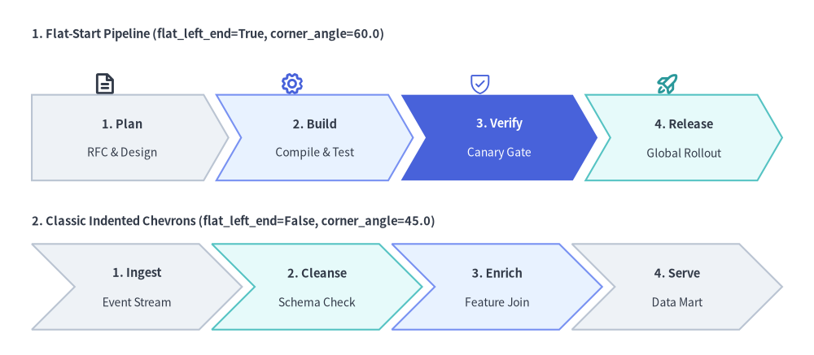
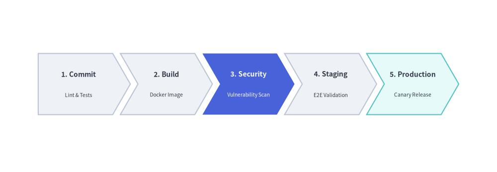
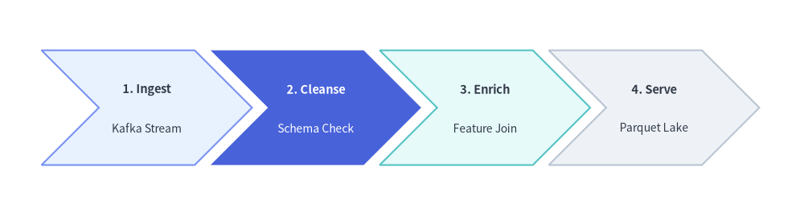

ChevronProcess Component
The ChevronProcess component draws horizontal, sequential process pipelines consisting of interlocking arrowhead blocks (chevrons).
It is the premier component for CI/CD delivery pipelines, phased development milestones, fulfillment lifecycles, and multi-step workflows.

Source Code
from drawlib.canvas import save, setup
from drawlib.icons import phosphor
from drawlib.smartarts import ChevronProcess
from drawlib.styles import Styles
from drawlib.text import text
setup(width=128, height=56)
# 1. Top Row: Flat-Start Chevron Pipeline (flat_left_end=True, corner_angle=60.0)
text((5, 50.5), "1. Flat-Start Pipeline (flat_left_end=True, corner_angle=60.0)", style=Styles.DarkBold.patch(text_size=10.5, halign="left"))
# Stage icons above each chevron
phosphor.file_text(xy=(16.5, 42.8), width=3.8, style=Styles.DarkBold)
phosphor.gear(xy=(46.0, 42.8), width=3.8, style=Styles.PrimaryBold)
phosphor.shield_check(xy=(75.5, 42.8), width=3.8, style=Styles.PrimaryFlat)
phosphor.rocket_launch(xy=(105.0, 42.8), width=3.8, style=Styles.SecondaryBold)
flat_pipe = ChevronProcess(
style=Styles.Neutral,
text_style=Styles.DarkBold.patch(text_size=10.5),
description_style=Styles.Dark.patch(text_size=10.0),
corner_angle=60.0,
spacing=2.0,
flat_left_end=True,
)
flat_pipe.add("1. Plan", description="RFC & Design")
flat_pipe.add("2. Build", description="Compile & Test", style=Styles.PrimaryNeutral)
flat_pipe.add(
"3. Verify",
description="Canary Gate",
style=Styles.PrimaryFlat,
text_style=Styles.WhiteBold.patch(text_size=10.5),
description_style=Styles.White.patch(text_size=10.0),
)
flat_pipe.add("4. Release", description="Global Rollout", style=Styles.SecondaryNeutral)
flat_pipe.draw(xy=(5, 27.5), width=118.0, height=13.5)
# 2. Bottom Row: Classic Indented Chevrons (flat_left_end=False, corner_angle=45.0)
text((5, 21.0), "2. Classic Indented Chevrons (flat_left_end=False, corner_angle=45.0)", style=Styles.DarkBold.patch(text_size=10.5, halign="left"))
indented_pipe = ChevronProcess(
style=Styles.Neutral,
text_style=Styles.DarkBold.patch(text_size=10.5),
description_style=Styles.Dark.patch(text_size=10.0),
corner_angle=45.0,
spacing=2.0,
flat_left_end=False,
)
indented_pipe.add("1. Ingest", description="Event Stream")
indented_pipe.add("2. Cleanse", description="Schema Check", style=Styles.SecondaryNeutral)
indented_pipe.add("3. Enrich", description="Feature Join", style=Styles.PrimaryNeutral)
indented_pipe.add("4. Serve", description="Data Mart")
indented_pipe.draw(xy=(5, 4.0), width=118.0, height=13.5)
save()
1. Quick Example: CI/CD Pipeline
from drawlib.canvas import setup
from drawlib.smartarts import ChevronProcess
from drawlib.styles import Styles
setup(width=128, height=34)
pipeline = ChevronProcess(
style=Styles.Neutral,
text_style=Styles.DarkBold.patch(text_size=10.5),
description_style=Styles.Dark.patch(text_size=10.0),
corner_angle=60.0,
spacing=2.0,
flat_left_end=True,
)
pipeline.add("1. Commit", description="Lint & Test")
pipeline.add("2. Build", description="Docker Image")
pipeline.add(
"3. Security",
description="Vuln Scan",
style=Styles.PrimaryFlat,
text_style=Styles.WhiteBold.patch(text_size=10.5),
description_style=Styles.White.patch(text_size=10.0),
)
pipeline.add("4. Staging", description="E2E Checks")
pipeline.add("5. Release", description="Canary", style=Styles.SecondaryNeutral)
pipeline.draw(xy=(5, 8), width=118.0, height=18.0)

2. Classic Indented Chevrons with Explicit item_width & corner_angle
Setting flat_left_end=False (the default) renders every stage—including the first—as a classic indented chevron, while passing an explicit item_width to draw(...) gives every stage an exact fixed body width instead of auto-dividing a bounding container width. You can also adjust corner_angle (valid range: 10.0 to 80.0 degrees) to control arrowhead sharpness, and mutate returned ChevronItem instances before drawing.
from drawlib.canvas import save, setup
from drawlib.smartarts import ChevronProcess
from drawlib.styles import Styles
setup(width=126, height=34)
etl = ChevronProcess(
style=Styles.Neutral,
text_style=Styles.DarkBold.patch(text_size=10.5),
description_style=Styles.Dark.patch(text_size=10.0),
corner_angle=45.0,
spacing=2.5,
flat_left_end=False,
)
etl.add("1. Ingest", description="Kafka Stream", style=Styles.PrimaryNeutral)
transform_stage = etl.add("2. Cleanse", description="Schema Check")
etl.add("3. Enrich", description="Feature Join", style=Styles.SecondaryNeutral)
etl.add("4. Serve", description="Parquet Lake")
# Mutate a ChevronItem (or access via etl.items[1]) before calling draw()
transform_stage.style = Styles.PrimaryFlat
transform_stage.text_style = Styles.WhiteBold.patch(text_size=10.5)
transform_stage.description_style = Styles.White.patch(text_size=10.0)
etl.draw(xy=(6.5, 8.0), height=18.0, item_width=24.0)
save()

3. Geometry & Coordinate Anchor
- Bottom-Left Anchor
(x, y): The coordinate passed todraw(xy=...)represents the bottom-left corner of the entire process bounding box. flat_left_end:False(default): All stages—including the first—have an indented left notch matching the arrowhead tip angle.True: The first chevron is drawn as a flat-backed pentagon with a clean vertical left border.
corner_angle: Angle of the arrowhead tip in degrees (valid range:10.0to80.0, default60.0). Lower angles (45.0) produce deeper, sharper arrowheads; higher angles (70.0) produce flatter tips.- Automatic vs. Explicit Stage Width (
widthvs.item_width):- When
item_width=None(default),draw()automatically calculates each stage's body width from the totalwidth,spacing, and arrowhead indent ($x_{\text{indent}} = \frac{\text{height}/2}{\tan(\text{corner_angle})}$): $$\text{item_width} = \frac{\text{width} - (N - 1) \cdot \text{spacing} - x_{\text{indent}}}{N}$$ - When
item_widthis explicitly provided,widthis ignored and each stage usesitem_widthdirectly.
- When
4. API Reference
Constructor (ChevronProcess)
ChevronProcess(
*,
style: Style,
text_style: Style,
description_style: Style,
corner_angle: float = 60.0,
spacing: float = 1.5,
flat_left_end: bool = False,
)
| Parameter | Type | Default | Description |
|---|---|---|---|
style |
Style |
(Required) | Default shape style applied to chevron blocks. |
text_style |
Style |
(Required) | Default text style for primary stage titles. |
description_style |
Style |
(Required) | Default text style for secondary description lines. |
corner_angle |
float |
60.0 |
Arrowhead tip angle in degrees (10.0 <= corner_angle <= 80.0). |
spacing |
float |
1.5 |
Horizontal gap between consecutive chevrons (> 0). |
flat_left_end |
bool |
False |
If True, replaces the first chevron's left indent with a flat vertical edge. |
Adding & Inspecting Stages (.add() & .items)
pipeline.add(
text: str,
*,
description: str = "",
style: Style | None = None,
text_style: Style | None = None,
description_style: Style | None = None,
show: bool = True,
) -> ChevronItem
| Parameter | Type | Default | Description |
|---|---|---|---|
text |
str |
(Required) | Primary stage title displayed inside the chevron. |
description |
str |
"" |
Optional secondary description line displayed below text. |
style |
Style | None |
None |
Custom shape style for this stage (falls back to constructor style). |
text_style |
Style | None |
None |
Custom title text style for this stage (falls back to constructor text_style). |
description_style |
Style | None |
None |
Custom description text style (falls back to constructor description_style). |
show |
bool |
True |
Whether to render this stage. Setting False hides the chevron while preserving layout slots for sibling stages. |
pipeline.items -> list[ChevronItem]: Returns the list of registeredChevronIteminstances in order.ChevronItemModel Fields: Each returned item exposes mutable attributes resolved atdraw()time:text: strstyle: Styletext_style: Styledescription_style: Styledescription: str = ""show: bool = True
Drawing (.draw())
pipeline.draw(
xy: tuple[float, float],
width: float = 90.0,
height: float = 12.0,
item_width: float | None = None,
scale: float = 1.0,
) -> None
| Parameter | Type | Default | Description |
|---|---|---|---|
xy |
tuple[float, float] |
(Required) | Bottom-left coordinate (x, y) of the process bounding box. |
width |
float |
90.0 |
Total bounding width allocated across all stages (used when item_width=None). |
height |
float |
12.0 |
Vertical height of each chevron block (> 0). |
item_width |
float | None |
None |
Explicit body width per chevron block. Overrides automatic width division when set. |
scale |
float |
1.0 |
Proportional scale factor around anchor xy (> 0). |